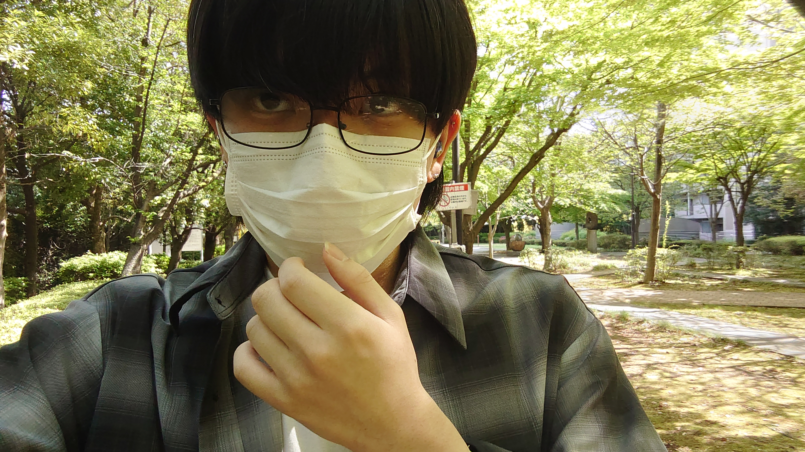
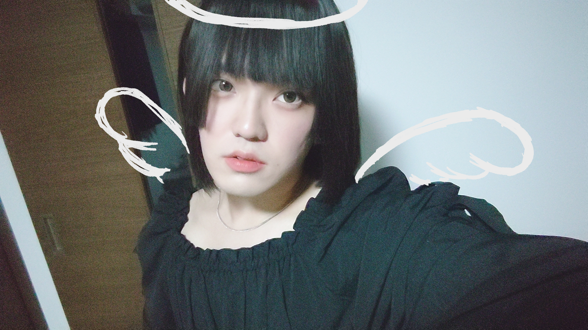

こんにちは、ザクザク食感です。
久しぶりに出社をしようと思った。
僕は基本在宅で働いているが、週に1度任意の日に会社に行って仕事をしなければならない。だが、特にチェックされていなさそうなので全然守っていない。もう2か月近く出社していない。
今までサボることに特に抵抗はなかったのだが、夜寝る前になって急に「なんかこのままじゃダメかも……！」と思ったので、次の日は出社することにした。
寝る前にお風呂に入って、朝7時に起きて、化粧をして、地味めな服を着て、満員電車に乗って出社した。
出社の日って早起きして満員電車に耐えた時点で、もう今日の仕事は終わった！と思うくらい疲れる。客先で働いていたときはここから泣きながら仕事していたわけだが、今は案件が決まるまで自習して進捗を報告すればいいだけなので、大した仕事はない。もう今日の労働は終わったも同然だ。
やれと言われたタスクをこなして、サボってると思われなさそうな進捗をつくってしまったら後はやることがない。
在宅でも出社でもチームメンバーとオンライン会議を繋いで、サボっていないか常に監視されながら自習をしている。在宅だと基本的にPCの前に居続けないといけないが、出社しているときはなぜかコンビニに行くなどの理由で離席することが許されている。おそらく社員同士のコミュニケーションの促進のためだと思うが、僕は会社の人とコミュニケーションを取らないので、ただサボるために離席しまくった。
せっかく気合入れて外に出たのに誰にも見られないとか許せない！選んで一人でいるくせに！
なら自撮りするしかない。フォロワーにしか見てほしくない。いいねでしか心が満たされない……

盛れない……鏡で見える自分と写真に映る自分が全然違う……加工しても意味がない。これって僕の目がバグってるんですか？それともスマホが5年物だからカメラがだめなんですか？
かなり試したけど納得いく自撮りができなかった。諦めて少し歩くことにした。
しばらく聞いていなかったかまみくを聞きながら歩いた。いくら仕事が楽とはいえ出社して陽キャ社員の戯れを見るだけでかなりストレスなので、その環境から離れて聞くかまみくはやっぱり最高だった。
かまみくは4月からリニューアルして、動画ありラジオから普通のラジオに原点回帰した。動画ありのラジオだとトークの間にジングルが挟まることがなかったので、新しくなったラジオでは聞きなれたジングルを聞けて嬉しかった。
しかも僕が一番好きな作業用かまみくシリーズのコーナーの、みくのしんのパーフェクト算数教室が復活した！！！！！めちゃくちゃうれしい！！！！！
平たく説明すると、みくのしんがリスナーのお金のトラブルを聞いてその人がいくら損したのかを考えるコーナーなのだが、これがマジで世界一面白い。躁鬱を治療しないまま仕事をしていた時期にこれを聞いて面白すぎて何度も救われてきたので、本当に嬉しい……毎週金曜日がもっと楽しみになった。
というか聞いていて思ったのだが、動画ありのラジオより動画なしのラジオの方が面白い気がする。話が落ちたときに一旦ジングルを挟む構成が聞きやすいからなのか、かまみくの二人が動画で表現できない分トークを頑張ろうとしているからなのかわからないが、明らかに面白くなったと思う。これから楽しみ～！！！
とか思いながら仕事を抜け出して歩く。今やっていることの本質は1人でする未成年飲酒や喫煙と変わりない。人に迷惑がかからず、言い逃れしようと思えばいくらでもできるような取るに足らないことでしか自分を縛っているものに反抗ができない。何も変わっていない。ダサい……
離席したりPCいじったりを繰り返して、進捗報告と夕会をこなして帰った。
すべてをルーティンにしたいと思っていた。同じ時間に起きて同じような仕事をして同じツイートをして同じものを食べる。そうすると心の動きがなくなって疲れないし、すごく楽だった。ただ、その分生きていて何も思わなくなるので何も生みだせなくなるのでどんどんつまらない人間になっていく……
このルーティン通り生きようという考え方はまだ躁鬱が治る前についた思想と習慣なので、だんだん普通になってきた今、考え方を改める必要があるな～と出社してみて気づいた。生活が変化してストレスがかかっても、その分心が豊かになる気がした。ただ出社しただけなのにこんなに日記をかけているのが何よりの証拠だと思う。
めんどくさがらずに変化のある生活をしよう……
それはそれとして、自撮りが盛れなくてムカついたので帰ってから女装をした。痩せたら着ようと思っていたワンピースが余裕で着れて嬉しかった。

でもなんか……顔も体つきも男だ……鏡に映る自分は可愛いのに！！！！！
結局満足いく盛れる写真は撮れなかった。もっと頑張って痩せるぞ……（痩せとかの問題じゃない、って気づいているけど今は考えたくない……）
それでは、さようなら。